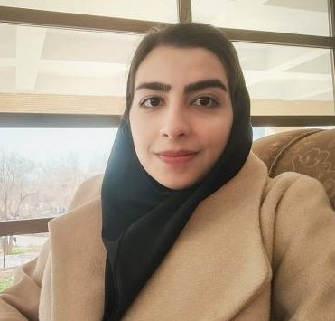

Mahdieh Karimi
AI & Neuroimaging Researcher
M.Sc. Student in Computer Engineering at Isfahan University of Technology (IUT). Focused on Computational Neuroscience, Brain Connectomics, and Advanced Sequence Models.
About Me & Background
I received my B.Sc. degree from the University of Isfahan, where my undergraduate thesis focused on Medical Image Analysis. Currently, as an M.Sc. student at Isfahan University of Technology (IUT), my research bridges Artificial Intelligence and Computational Neuroscience, investigating complex brain dynamics and neuroimaging signals (fMRI/EEG).
M.Sc. Thesis Research
Due to the highly massive and high-dimensional nature of fMRI data, achieving low computational time complexity is a critical challenge. My master's thesis focuses on optimizing and tailoring advanced models with superior time complexity order to efficiently process large-scale brain connectome data and capture intricate spatial-temporal dynamics.